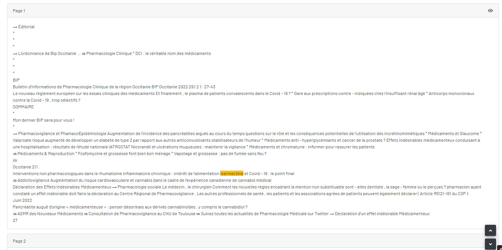
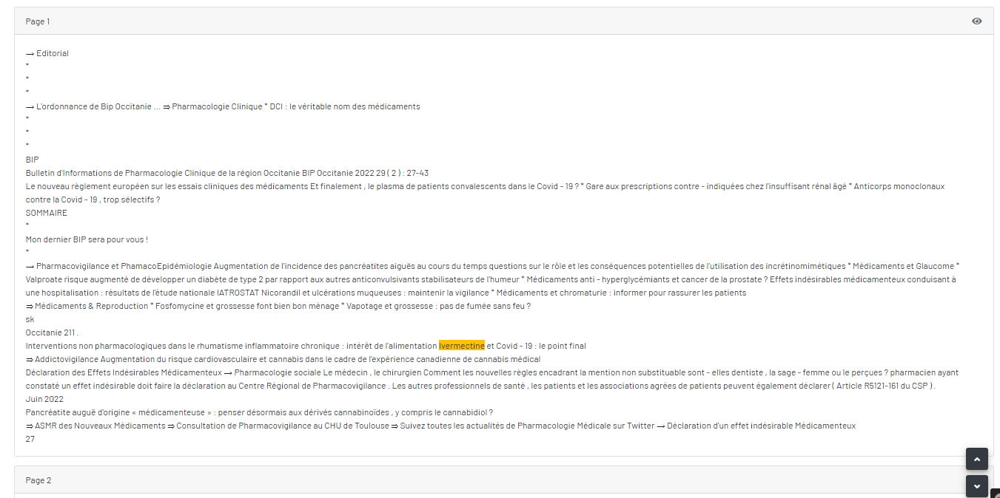

Détail d'un mot-clé trouvé dans ce numéro
Il y a 2 blocs : « le mot-clé recherché », « les pages où se trouve ce mot-clé »,
Bloc du "mot-clé recherché"
Bloc des "pages où se trouve ce mot-clé"

Il y a 2 blocs : « le mot-clé recherché », « les pages où se trouve ce mot-clé »,
